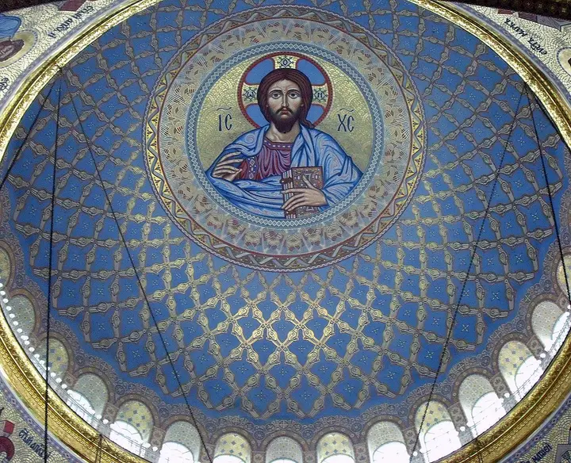

Фото: Никонико962, CC BY-SA 4.0 · Wikimedia Commons
Прогулочный район · Пригороды
Кронштадт: Якорная площадь и Морской собор
Город-крепость на острове: величественный Морской собор, каналы, доки и тихие улицы с флотской историей — поездка на день.
- ₽ · до 1 500 ₽ на человека
- Новое в каталоге
- в 1 плане
Позвать сюда: Кронштадт: Якорная площадь и Морской соборОткрыть в каталоге: Кронштадт: Якорная площадь и Морской соборМаршрут до места: Кронштадт: Якорная площадь и Морской собор
Адрес и детали
- Адрес
- Кронштадт, Якорная площадь, 1
Открыть на Яндекс Картах (в новой вкладке) - Метро
- м. Беговая
- Район
- Пригороды
- Цена
- до 1 500 ₽ на человека
- Часы работы
- пн–вс 09:00–19:00 · проверили в октябре 2026
- Телефон
- +7 (800) 511-14-18
- Проверено
- работает — проверили в октябре 2026
Планы с этим местом 1
- Кронштадт: Якорная площадь и Морской собор · Прогулочный район · м. Беговая
- дальше на метро или таксиОстров фортов · Парк
Морской собор и тихие улицы города-крепости, а потом — Остров фортов: маяк, аллея флота и форты на горизонте. Между точками — на автобусе или такси.
Открыть план: Кронштадт: собор и фортыПозвать сюда: Кронштадт: собор и форты
Фото: Никонико962, CC BY-SA 4.0 · Wikimedia Commons

Входит в подборки
Похожие рядом
Как позвать
- Выбери план, место или событие — в карточке адрес, цены и маршрут в Яндекс Картах.
- Нажми «Позвать сюда» — соберётся приглашение-игра для свидания или голосование для компании.
- Отправь ссылку в любой мессенджер: тебе ответят, а компания отметит, куда и когда может. Бесплатно и без регистрации.